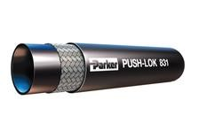
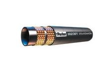
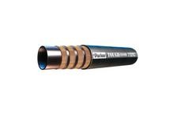

Manguera de baja presión con 1 capa de fibra trenzada Parker
Manguera de baja presión con 1 capa fibra trenzada, tubo de caucho sintético y cubierta de fibra, usada en sistemas hidráulicos y neumáticos, fluidos a base de petroleo, aceites lubricantes y soluciones anticongelantes
►Medida de 1/4 pulg x diámetro de manguera 12.7mm
►Presión de trabajo 350 psi
►Temperaturas de trabajo: Aire +70°C, Agua +85°C , Aceites -40 a 100°C
►Venta por metro lineal
Manguera de baja presión con 1 capa de fibra trenzada parker 821-10 5/8
Manguera de baja presión con 1 capa fibra trenzada, tubo de caucho sintético y cubierta de fibra, usada en sistemas hidráulicos y neumáticos, fluidos a base de petroleo, aceites lubricantes y soluciones anticongelantes
►Medida de 5/8 pulg x diámetro de manguera 23mm
►Presión de trabajo 250 psi
►Temperaturas de trabajo: Aire +70°C, Agua +85°C , Aceites -40 a 100°C
►Venta por metro lineal
Manguera baja presión uso pesado 1 capa de fibra paker
Manguera de baja presión de uso pesado con 1 capa fibra trenzada, tubo de caucho sintético y cubierta de caucho sintético, usada en sistemas hidráulicos y neumáticos, fluidos a base de petroleo, aceites lubricantes
y soluciones anticongelantes, no recomendada para combustibles de motor.
►Medida de 1/4 pulg x diámetro de manguera 12.7mm
►Presión de trabajo 350 psi
►Temperaturas de trabajo: Aire +70°C, Agua +85°C , Aceites -40 a 100°C
►Venta por metro lineal

Manguera baja presión uso pesado 1 capa de fibra paker 831-6 3/8
Manguera de baja presión de uso pesado con 1 capa fibra trenzada, tubo de caucho sintético y cubierta de caucho sintético, usada en sistemas hidráulicos y neumáticos, fluidos a base de petroleo, aceites lubricantes
y soluciones anticongelantes, no recomendada para combustibles de motor.
►Medida de 3/8 pulg x diámetro de manguera 16mm
►Presión de trabajo 300 psi
►Temperaturas de trabajo: Aire +70°C, Agua +85°C , Aceites -40 a 100°C
►Venta por metro lineal
Manguera media presión para freno neumático 2 capas parker 201-4 3/16
Manguera media presión para freno neumático de 2 capas: malla textil interna y malla de alambre de acero de alta resistencia, tubo de caucho sintético y cubierta de tubo en goma y cubierta de malla textil. Para
fluidos hidráulicos con base de petróleo, agua-glicol y fluidos hidráulicos con emulsión agua-aceite, grasa, lubricantes, crudo y fuel-oil, aire y agua. Cumple SAE 100 R5 , SAE J1402 AII, D. O. T. FMVSS 106-AII
►Medidas 3/16 pulg x diámetro exterior 12.2mm
►Presión de trabajo 3000 psi
►Temperatura de trabajo -40 hasta +150°C, Agua +85°C, Aire+70°C
►Venta por metro lineal
Manguera media presión para freno neumático 2 capas parker 201-5 1/4
Manguera media presión para freno neumático de 2 capas: malla textil interna y malla de alambre de acero de alta resistencia, tubo de caucho sintético y cubierta de tubo en goma y cubierta de malla textil. Para
fluidos hidráulicos con base de petróleo, agua-glicol y fluidos hidráulicos con emulsión agua-aceite, grasa, lubricantes, crudo y fuel-oil, aire y agua. Cumple SAE 100 R5 , SAE J1402 AII, D. O. T. FMVSS 106-AII
Manguera presión media 1 capa de alambre de acero parker 422-4 1/4
Manguera de media presión 1 capa de malla de alambre de acero de alta tensión, tubo de nitrilo, cubierta de goma sintética, Fluidos con base de petróleo y agua-glicol, aceites lubricantes, aire y agua. Cumple ISO 1436.
►Medidas 1/4 pulg x diámetro exterior 13.4mm
►Presión de trabajo 3250 psi
►Temperatura de trabajo -40 hasta +100°C, Agua +85°C, Aire+70°C
►Venta por metro lineal
Manguera presión media 1 capa de alambre de acero parker 422-20 1-1/4
Manguera de media presión 1 capa de malla de alambre de acero de alta tensión, tubo de nitrilo, cubierta de goma sintética, Fluidos con base de petróleo y agua-glicol, aceites lubricantes, aire y agua. Cumple ISO 1436.
►Medidas 1-1/4 pulg x diámetro exterior 44.8mm
►Presión de trabajo 900 psi
►Temperatura de trabajo -40 hasta +100°C, Agua +85°C, Aire+70°C
►Venta por metro lineal
Manguera media presión con capa de acero inoxidable parker 919-6 5/16"
Manguera de media presión de tubo de PTFE con cubierta de malla de acero inoxidable 304, usada en fluidos quimicos, aceites calientes, refrigerantes, gases medicos y adhesivos.
►Medidas 5/16 pulg x diámetro exterior 11mm
►Presión de trabajo 2500 psi
►Temperatura de trabajo -73°C a +232°C
►Venta por metro lineal
Manguera hidráulica de alta presión doble malla parker 302-4-rl 1/4
Manguera alta presión doble malla de alambre de acero alta resistencia, tubo de nitrilo y goma sintética, Compatibilidad de fluido extendida: aceites biodegradables inclusive, fluidos con base de petróleo y agua-glicol,
aceites lubricantes, aire y agua. Conforme a ISO 1436, EN 853 2SN – ISO S 1436 – SAE 100 R2 AT
►Medida interior 1/4 pulg x medida exterior 15mm
►Presión máxima de trabajo 5800 psi
►Temperatura de trabajo -40° a +100°C
►Venta por metro lineal

Manguera hidráulica de alta presión doble malla parker 302-20-rl 1-1/4
Manguera alta presión doble malla de alambre de acero alta resistencia, tubo de nitrilo y goma sintética, Compatibilidad de fluido extendida: aceites biodegradables inclusive, fluidos con base de petróleo y agua-glicol,
aceites lubricantes, aire y agua. Conforme a ISO 1436, EN 853 2SN – ISO S 1436 – SAE 100 R2 AT
►Medida interior 1-1/4 pulg x medida exterior 47mm
►Presión máxima de trabajo 1800 psi
►Temperatura de trabajo -40° a +100°C
►Venta por metro lineal

Manguera alta presión 4 capas alambre de acero parker 772tc-24 1-1/2
Manguera alta presión 4 mallas de alambre de acero alta resistencia, tubo de nitrilo y goma sintética resistente a la abrasión MSHA aceptada, Compatibilidad de fluidos hidráulicos, base petroleo y aceites lubricantes.
Cumplen con SAE 100R12 / ISO 3862-1
►Medida de 1-1/2 pulg x diámetro exterior 53mm
►Presión de trabajo 2500 psi
►Temperatura de trabajo -40°C to +125°C
►Venta por metro lineal